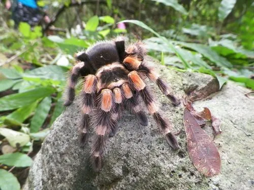

蛛形动物 · 动物界
墨西哥红膝捕鸟蛛 Brachypelma smithi

原产墨西哥的温顺捕鸟蛛，腿部关节有橙红色环纹，因宠物贸易被大量捕捉，受国际公约保护，毒性弱但蛰毛需避免接触。
- 分类
- 门节肢动物门纲蛛形纲目蜘蛛目科捕鸟蛛科属短尾捕鸟蛛属
- 栖息环境
- 墨西哥西南部的干旱灌丛、半落叶林与洞穴石缝
- 地理分布
- 墨西哥西南部太平洋沿岸地区
- 保护级别
- IUCN 近危（NT）；CITES 附录 II；非中国原产
物种志
墨西哥红膝捕鸟蛛足展 14–16 厘米，身体覆盖褐色长毛，头胸甲呈黑色，腹部有红褐色的长毛，八足粗壮，各足关节处有明显的橙红色环纹，“红膝”之名由此而来。它行动缓慢、性格温顺，是捕鸟蛛中最著名的物种之一。
它原产于墨西哥西南部的干旱灌丛和半落叶林，栖息于洞穴和石缝中，夜间捕食昆虫和小型无脊椎动物。雌蛛每次产卵约 300–500 枚，卵囊由雌蛛守护，孵化约 2 个月。它因外形美丽被大量捕捉用于宠物贸易，野生种群数量下降，被列入国际公约附录 II；受惊时它会弹射腹部蛰毛，蛰毛接触皮肤或眼睛会引起瘙痒和红肿。它的毒性弱，对人威胁小。在中国它属于外来物种，饲养者不可随意放生。
形态与习性
- 食性昆虫和小型无脊椎动物
- 足展14–16 cm
- 寿命雌蛛 20–30 年，雄蛛约 3–5 年
- 繁殖卵生，每窝约 300–500 枚，孵化约 2 个月
- 活动节律夜行性
- 防御弹射腹部蛰毛，接触皮肤或眼睛会引起瘙痒红肿
- 毒性毒性弱，对人威胁小
趣味知识
- 墨西哥红膝捕鸟蛛腿部关节的橙红色环纹，让它成为最知名的捕鸟蛛之一。
- 它性情温顺、行动缓慢，是很多饲养者入门捕鸟蛛的首选。
- 因宠物贸易过度捕捉，它被列入国际公约附录 II，贸易受到监管。